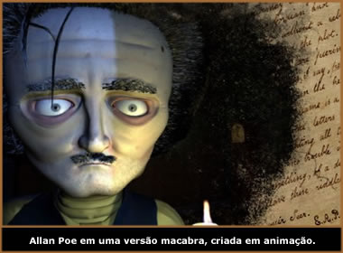
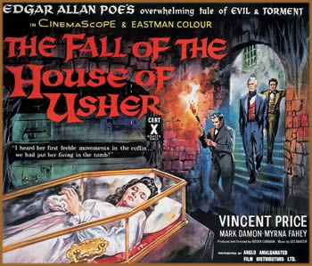

Os chamados schauerfilme ("filmes
horripilantes") tiveram origem na Alemanha e foram
rodados entre a humilhação do país
diante da derrota da Primeira Guerra Mundial e a ascensão
do poder nazista na década de 30. A abordagem do
schauerfilme, emprestada do teatro e da literatura, foi
a mesma do expressionismo, na qual o clima e o psicológico
eram mais importantes do que o realismo. O maior retrato
expressionista é o conhecido O Gabinete do Dr.
Caligari, lançado em 1919. Trata-se da "visão
do mundo de um louco" e conta a história de
um sinistro hipnotizador (Caligari), que exibe em sua cidade
um sonâmbulo (Cesare), anunciado como capaz de prever
o futuro. O homem "prevê" a morte de um
dos espectadores, um estudante. Caligari força a
realização da profecia, conduzindo o sonâmbulo
para assassinar o estudante. Carl Mayer, co-autor do filme,
diz: "Caligari representa os líderes insanos
que enviam as massas submissas (retratadas pelo sonâmbulo)
para matar e morrer na guerra".
Porém,
antes mesmo deste clássico, o escritor Edgar Allan
Poe já influenciava o cinema americano com seus poemas
um tanto quanto darks. A primeira tentativa de se fazer
um cinema denominado gótico é de D. W. Griffith
(The Avenging Conscience, 1914). O filme utilizava o argumento
de The Tell – Tale Heart, um conto clássico
de Poe, que fala sobre a culpa de um anti-herói envolvido
num grande esquema de assassinato.
Edgar Allan Poe nasceu em 19 de janeiro de
1809. Filho de dois atores itinerantes, viveu trágicos
momentos, pois seu pai, David Poe, o abandonou ainda cedo,
e sua mãe, Elizabeth, morreu em sua presença
antes dele completar seus 3 anos de idade. Talvez por isso
ele encarasse a vida como uma performance, qualquer pequena
crise era motivo para grandes melodramas. Poe levou a literatura
gótica ao universo psicológico. O sinistro
de seus contos girava muito mais em torno de desequilíbrios
mentais do que em forças sobrenaturais. Contos de
horror com sátiras inteligentes, um clima estranho
e uma sensação de não saber ao certo
se "é pra rir ou pra chorar". E o escritor
Poe levou seu universo gótico às telas de
cinema também.
Os assassinos da Rua Morgue, de
1932, conta a história de um cientista sádico,
interpretado por Bella Lugosi, ator austríaco também
conhecido pela caracterização do famoso personagem
Drácula. Mas o filme deve mais a O Gabinete do
Dr. Caligari do que ao conto de Poe. Dois anos depois,
em 1934, outra tentativa de adaptação de uma
obra de Poe, O gato preto, menos semelhante que
Os assassinos da rua Morge porém um clássico
cult dirigido por Edgar G. Ulmer.
É em 1960, com a união dos
atores Vicent Price e Roger Corman, que as obras de Edgar
Allan Poe se tornam filmes ícones do cinema gótico.
Price e Corman refilmam A queda da casa de Usher,
produzido na França, em 1928, pelo polonês
Jean Epstein. Lorde Roderick Usher vive preocupado com a
saúde da esposa, ela morre e é enterrada,
mas ele acredita que ela apenas permanece adormecida e,
a partir daí, fatos estranhos acontecem em volta
da casa.
A parceria dos dois deu tão certo
que Roger Corman resolve produzir o terror de Allan Poe
em 7 filmes conhecidos como "Ciclo Poe". Em 1960
filmam O Solar Maldito; em 1961, A Mansão
do Terror – adaptação de O
Poço e o Pêndulo; em 1962, Muralhas
do Terror – inspirado em 3 contos de Poe (Morela,
O Gato Preto e O Caso do Sr. Valdemar);
em 1963, O Castelo Assombrado; em 1964, Orgia
da Morte, dito seu melhor filme. E também em
64 é rodado O Túmulo do Sinistro,
baseado no conto Ligéia. Mesmo dirigindo quase sem
dinheiro e subestimado por grande parte da crítica
da época, Corman persistiu. Especialista em filmagens
de baixo custo, reaproveitava cenários de um filme
para o outro e os produzia em uma semana. O diretor dirigiu
43 filmes nos primeiros 10 anos de carreira e produziu mais
de 3 centenas desde 1955. E, mesmo custando uma ninharia,
faziam tanto sucesso nos drive-ins dos anos 50, que produziam
o milagre da multiplicação. Ele continua trabalhando
até hoje (já cheio da grana...)
Mas as influências de Edgar Allan Poe
não morreram nos anos 60.
"Quando
era jovem, eu tinha duas janelas no meu quarto, janelas
ótimas, que davam para o gramado e, por alguma razão,
meus pais cobriram as janelas com tijolos e me deram uma
janelinha que não passava de uma fenda na parede,
e eu precisava subir na escrivaninha para ver o que havia
lá fora (...) Naquela época, não perguntei
por que eles fizeram aquilo. Então, comparei essa
experiência com um conto de Poe em que uma pessoa
era emparedada, enterrada viva, para poder falar a respeito
dessa época."
O nome do garotinho que disse tal frase é
Timothy William Burton, mais conhecido como Tim Burton.
O famoso diretor de Edward Mãos de Tesoura
começou sua carreira com um curta-metragem de animação
em stop motion chamado Vincent.
O curta, de 6 minutos, é uma autobiografia de Burton
e, de forma muito interessante, repete citações
dos filmes de horror estrelados por Price (que narra a animação),
assim como passagens de contos e poemas originais de Allan
Poe. O filme combina também um visual de O Gabinete
de Dr. Caligari com versos anárquicos de Dr.
Seuss em O Gatola da Cartola.
E Poe continua a influenciar o cinema de
horror e a cultura gótica. Um exemplo é a
animação não muito conhecida, Lenore.
A personagem já existia no mundo dos quadrinhos há
um bom tempo, mas, com o advento da internet, tornou-se
interessante transformá-la em um ser animado. O nome
de seu criador é Roman Dirge, e a menininha que esbanja
um grande humor negro é personagem famosa de um conto
de Poe, O Corvo. A linda menininha de cabelos loiros
que adora brincar com bonecas e animaizinhos parece ser
uma garota comum, com uma "pequena" diferença:
ela é uma morta-viva.
Assim, podemos perceber como Poe influenciou
várias gerações não só
de importantes autores literários, mas também
de tantos diretores e produtores de cinema de horror e gótico.
Por
Débora Castro Cabral (Adaptado por Spectrum)
Extraído
de www.negativoonline.com